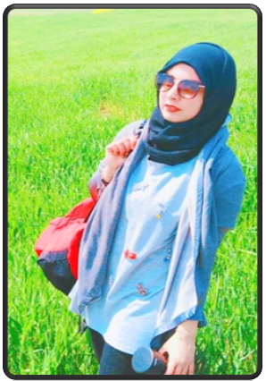

Smadhi Zouneikha
Je suis technicienne en Réseau informatique
Et Voila Mon Cv !

- 2014: Licence en réseau informatique Isit'com hammem Sousse
- 2011: Baccaleauréat informatique Lycéé secondaire Iben Haithem Béja
Cliquer sur le logo pour la redirection au site de L'ISITCOM
Stages :
- 2014: Projet de fin d'étude au sein de KROMBERG & SCHUBERT Béja
▪Sujet :Mise en place d'une application java de gestion de stock
▪Durée : 4 mois
- 2013: Stage d'étude: ACTEL Tunisie Telecom Béja
▪Durée : 1 mois
- 2013: Stage d'observation: STEG Béja
▪Durée : 1 mois
Experiences professionnels :
- 2020: Assistante administrative dans un centre de kinésithérapie
▪Durée : 1 an
- 2019: Assistante de direction dans un bureau d'avocat à Béja
▪Durée : 5 mois
- 2017: Stage professionnel : Cotras, Carthage Dermech Tunis
▪Durée : 6 mois
- 2016: Assistante de direction dans une agence immobilière Donia , L'Aouina Tunis
▪Durée : 3 mois
Experiences extra professionnels :
- 2022: Agent pour la collecte des résultats de la journnée de "référendum constitutionnel " : IsieBéja
Section infotmatique
- 2019: Agent pour la collecte des résultats d'élections présidentielles et législatives : IsieBéja
Section informatique
- 2018: Certificat en SOFT SKILLS
- 2018: Certificat dans la création de faux bijoux artisanaux
- 2014-2015-2016: Déléguée du la section réseaux informatiques à la journée informative de l'orientation universitaire
Intêrets :
- Sport d'endurance :
- Randonnées
- Marche rapide
- Aérobique
- Zumba
- Tabata
- Cuisine
- Cinéma
- Voayge